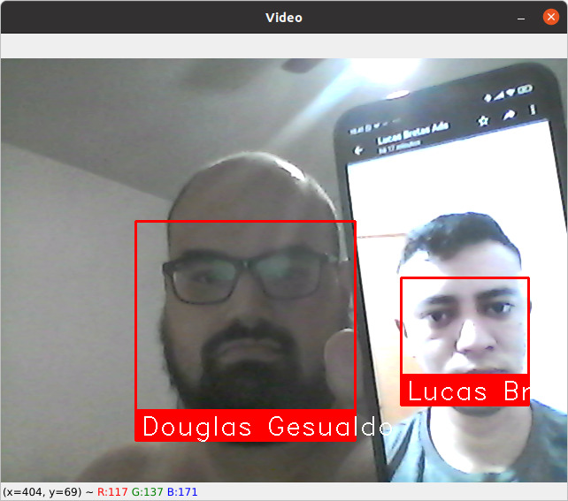

Estrutura Simples
Código de fácil entendimento e gerenciamento das imagens base.
Facilidade de Uso
Com poucas linhas de código seu reconhecimento facial está funcionando.
Inúmeras Aplicabilidades
Você pode aplicar a ferramenta em qualquer sistema que utilize Python.
Segurança Residencial
Integre a ferramenta nos mais variados sistemas inteligentes residenciais.
iD Face> Documentação> Importação das bibliotecas
Documentação detalhada passo a passo:
import face_recognition
import cv2
import numpy as np
# Inserindo a captura de video
video_capture = cv2.VideoCapture(0)
# Carregando Imagens e reconhecendo as mesmas
img1_image = face_recognition.load_image_file("img1.jpeg")
img1_face_encoding = face_recognition.face_encodings(img1_image)[0]
img2_image = face_recognition.load_image_file("img2.jpeg")
img2_face_encoding = face_recognition.face_encodings(img2_image)[0]
Importação das bibliotecas necessárias
Primeiramente é feita as importações necessárias, nesse caso iremos precisar da face_recognition, cv2 e numpy.
Carregamento das imagens
Em seguida executamos o carregamento das imagens com os rostos a serem reconhecidos.
iD Face> Documentação> Criando matrizes com rostos conhecidos
Documentação detalhada passo a passo:
#criando matrizes com os rostos conhecidos e nomeando
known_face_encodings = [
img1_face_encoding,
img2_face_encoding
]
known_face_names = [
"Nome do Usuário 1",
"Nome do Usuário 2"
]
#inicializando variaveis
face_locations = []
face_encodings = []
face_names = []
process_this_frame = True
Criando matrizes com rostos conhecidos
Neste momento são criadas matrizes com as imagens passadas, para que, o processamento e análise seja concluído. Além disso também são adicionados os nomes para serem atribuidos aos rostos.
iD Face> Documentação> Processamento das imagens encontradas
Documentação detalhada passo a passo:
while True:
# Utilizando um frame do video
ret, frame = video_capture.read()
# Redimensionando a imagem para 1/3 do tamanho para um reconhecimento mais veloz
small_frame = cv2.resize(frame, (0, 0), fx=0.25, fy=0.25)
# Convertendo a imagem BGR para RGB
rgb_small_frame = small_frame[:, :, ::-1]
# Processando frames alternados
if process_this_frame:
# Encontrando todos os rostos e codificações de rostos no frame atual
face_locations = face_recognition.face_locations(rgb_small_frame)
face_encodings = face_recognition.face_encodings(rgb_small_frame, face_locations)
face_names = []
for face_encoding in face_encodings:
# Se caso não reconhecer rostos dar o nome de Desconhecido
matches = face_recognition.compare_faces(known_face_encodings, face_encoding)
name = "Desconhecido"
# # Caso reconheça, exibir o nome correspondente
face_distances = face_recognition.face_distance(known_face_encodings, face_encoding)
best_match_index = np.argmin(face_distances)
if matches[best_match_index]:
name = known_face_names[best_match_index]
face_names.append(name)
process_this_frame = not process_this_frame
Processamento das imagens encontradas
A ferramenta faz toda a análise e comparação de valores entre as imagens conhecidas, e determina se é um rosto que se encontra na sua base de imagens ou não.
iD Face> Documentação> Mostrando os resultados
Documentação detalhada passo a passo:
# Mostrando os resultados
for (top, right, bottom, left), name in zip(face_locations, face_names):
# redimensionando para o tamanho normal
top *= 4
right *= 4
bottom *= 4
left *= 4
# Desenhando um retangulo no rosto detectado
cv2.rectangle(frame, (left, top), (right, bottom), (0, 0, 255), 2)
# Inserindo o nome abaixo do retangulo
cv2.rectangle(frame, (left, bottom - 35), (right, bottom), (0, 0, 255), cv2.FILLED)
font = cv2.FONT_HERSHEY_DUPLEX
cv2.putText(frame, name, (left + 6, bottom - 6), font, 0.65, (255, 255, 255), 1)
# Mostrando o resultado
cv2.imshow('Video', frame)
# Aperte f para finalizar
if cv2.waitKey(1) & 0xFF == ord('f'):
break
# Desligando a webcam
video_capture.release()
cv2.destroyAllWindows()
Mostrando os resultados
E finalmente temos os resultados obtidos através da análise dos rostos, se tudo estiver ok deveremos ter abaixo de cada imagem o nome de seu respectivo rosto.
iD Face> Get Started
Get-Started
Ficou interessado e deseja começar a usar a nossa ferramenta agora mesmo?
É só escolher a modo que você mais gosta de clonar repositórios e aproveite!
gh repo clone DouglasGesualdo/Face-recognition
Clone
- GitHub CLI: